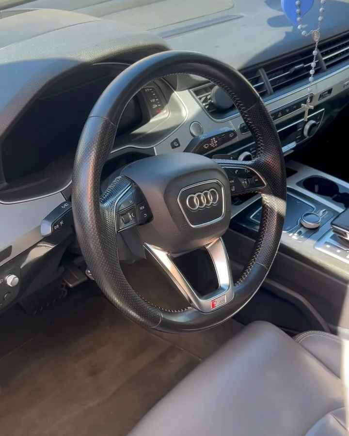
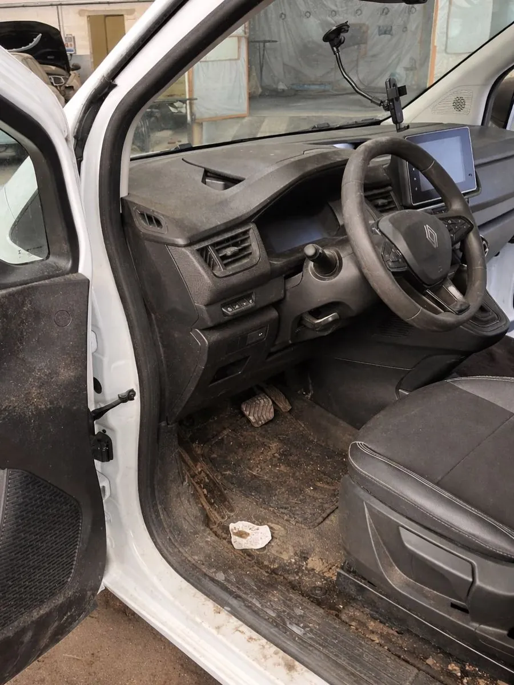
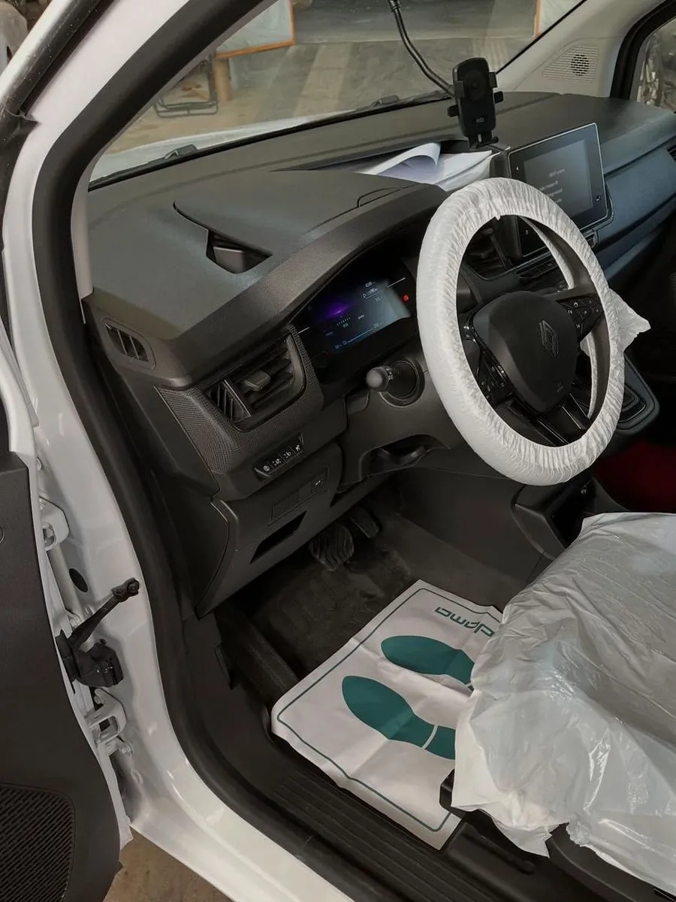
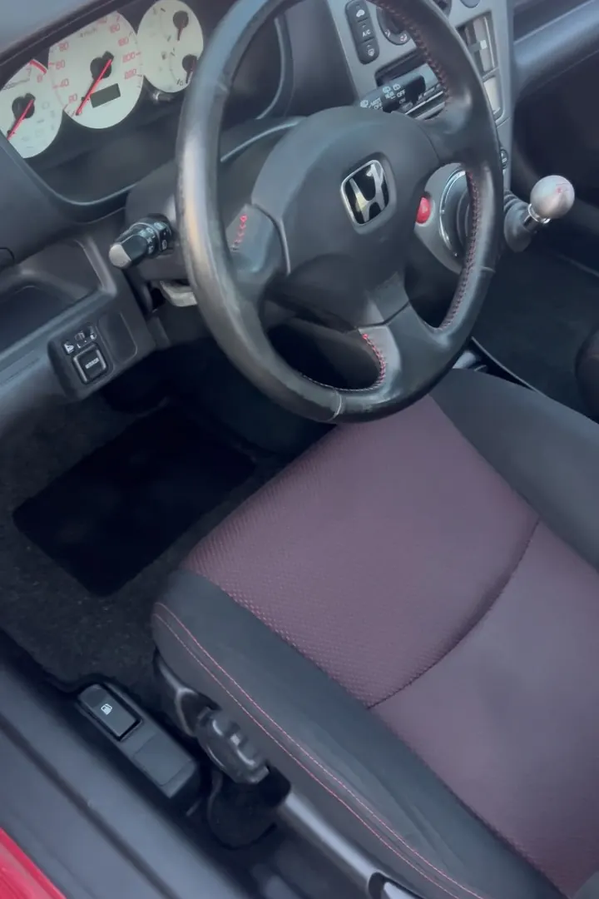
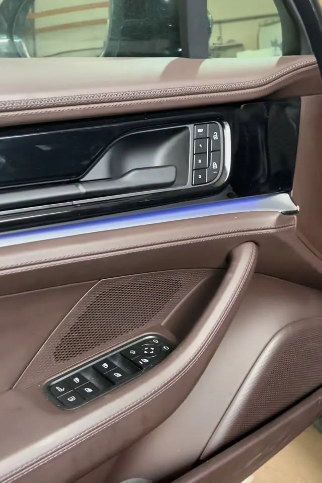
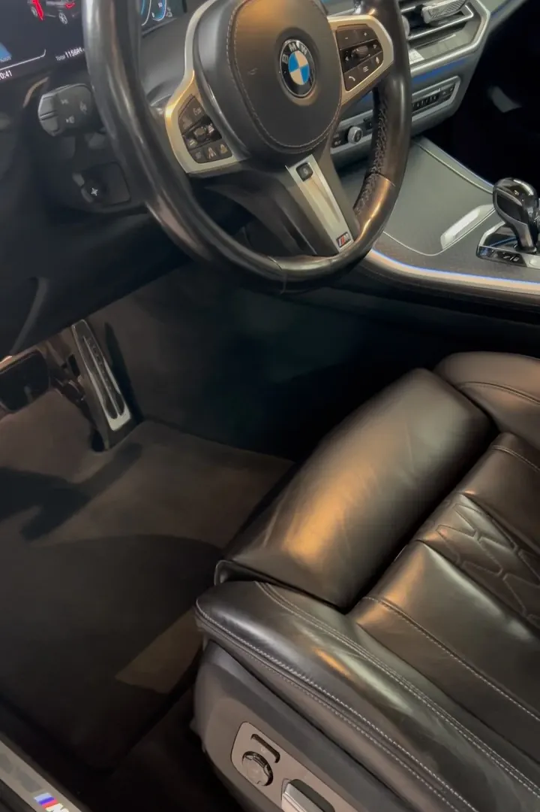
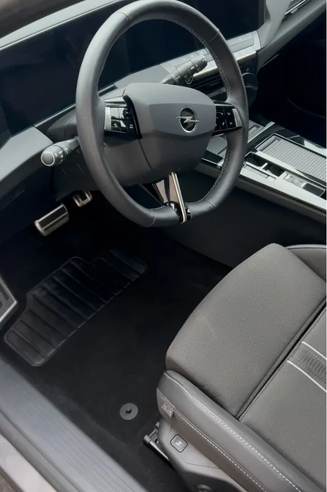
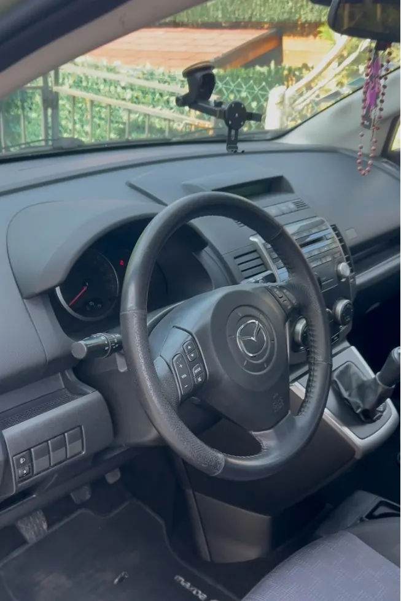

Nettoyage intérieur complet
Aspiration, plastiques, vitres, tapis et moquettes, cuirs et coffre : l’habitacle repris pièce par pièce.
Detailing intérieur · à domicile
Nettoyage et rénovation intérieure de votre voiture, chez vous, en Seine-et-Marne (77) et dans l’Aisne (02).
Demandez votre devis comme vous le souhaitez : formulaire ou message Instagram.

Résultats
Même véhicule, vu du même côté. Glissez le fil pour comparer.


Renault Kangoo, côté conducteur. Sur la photo « après », la housse du volant et le protège-siège sont encore en place (protections de chantier).
Glissez le fil, ou utilisez les flèches du clavier.
Toutes les réalisationsPrestations
Une prestation centrale, deux options à ajouter selon l’état de votre véhicule.
Aspiration, plastiques, vitres, tapis et moquettes, cuirs et coffre : l’habitacle repris pièce par pièce.
En option : un passage à la machine shampouineuse pour les textiles qui en ont besoin.
Un supplément selon l’état du véhicule, pour les intérieurs qui demandent plus de temps.
Intérieur nettoyé et désinfecté pour les utilitaires. Flottes et véhicules de société : demandez un devis.
Comment ça se passe
Quatre étapes, sans déplacement de votre part.
Formulaire, message ou appel : le canal qui vous convient. Vous indiquez votre véhicule (marque, modèle) et vos besoins.
Pas besoin de compte InstagramLe tarif est donné selon le véhicule et les options choisies, avant la réservation.
Tarif annoncé d’avanceEnsemble, selon vos disponibilités, en semaine ou le week-end. Puis nous nous déplaçons chez vous, dans le 77 ou le 02.
Prêt à reprendre la route, sans que vous ayez quitté votre domicile.
Tarifs de lancement
Un tarif par catégorie de véhicule. Les options s’ajoutent selon vos besoins.
| Catégorie | Nettoyage intérieur complet | + Shampoing sièges et moquettes | + Poils, sable, taches incrustées |
|---|---|---|---|
| CitadineToyota Yaris, Clio, 208, C1 | 30 € | +10 € | +10 € |
| Berline / compacteAudi A5 Sportback, Série 3, Golf, Mégane, Classe C | 40 € | +15 € | +15 € |
| SUV / 4x4Peugeot 3008, Audi Q5, BMW X3, Toyota RAV4 | 50 € | +15 € | +20 € |
| 7 places / grand véhiculeTouran, Sharan, Classe V, 5008, Espace | 60 € | +20 € | +25 € |
| UtilitaireKangoo, Berlingo, Partner, Trafic | 35 € | +10 € | +15 € |
Galerie
Les détails d’un intérieur : coutures, aérations, joints, moquettes.








Zone d’intervention
Nous nous déplaçons directement à votre domicile. Exemples de communes desservies :
et alentours
et alentours
Vous habitez une autre commune dans le 77 ou le 02, ou à proximité ? Contactez-nous pour vérifier.
Vérifier ma communeQuestions fréquentes
Non. Nous venons directement chez vous, dans le 77 et le 02 et aux alentours.
Avec le formulaire de la page Contact, ou par un autre canal de contact si le vôtre est disponible. Un compte Instagram n’est pas nécessaire.
Selon la catégorie de votre véhicule (citadine, berline, SUV, 7 places, utilitaire), avec en option le shampoing des sièges et moquettes et un supplément pour les poils d’animaux, le sable ou les taches incrustées.
Il est inclus jusqu’à 20 km. Au-delà, un supplément selon la distance vous est annoncé avant la réservation.
Les créneaux sont flexibles, en semaine et le week-end, choisis ensemble selon vos disponibilités.
Cela dépend de l’état de l’habitacle et des options choisies. Envoyez-nous des photos de votre intérieur pour une estimation.
Oui : utilitaires et véhicules de société peuvent être nettoyés à l’intérieur. Demandez un devis.
Devis par formulaire ou message Instagram.